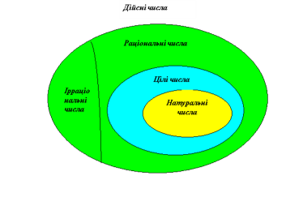
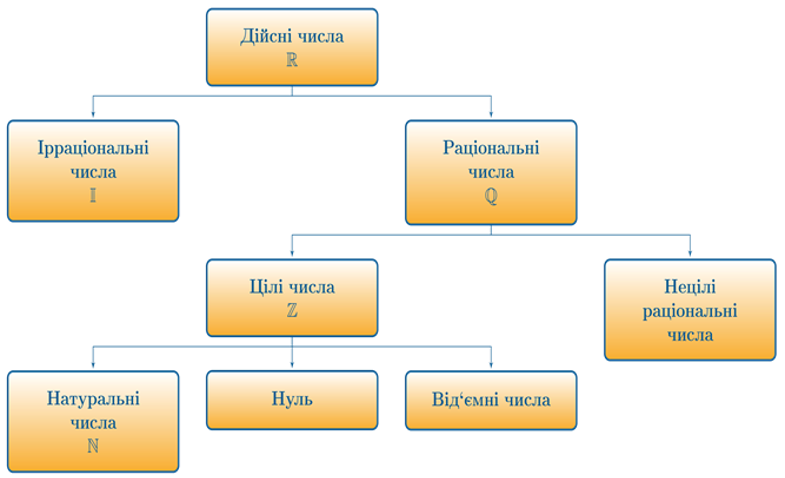

Дійсні числа
Дійсні числа - це будь-яке число, яке відповідає точці на дійсній прямій і може бути класифіковане на натуральне, ціле, раціональне та ірраціональне числа.
Раціональні числа разом з ірраціональними утворюють множину дійсних чисел.
Множина дійсних чисел позначається символом ℝ.
Дійсні числа можна подати у вигляді нескінченного дробу.
Дійсні числа можна додавати, віднімати, множити, підносити до степеня й ділити на числа, які відмінні від 0.
Для додавання і множення дійсних чисел a, b, c справджуються такі закони:

На малюнку показано множину дійсних чисел, яка позначається буквою ℝ і містить множини натуральних, цілих, раціональних чисел, тобто ℕ⊂ℤ⊂ℚ⊂ℝ.
